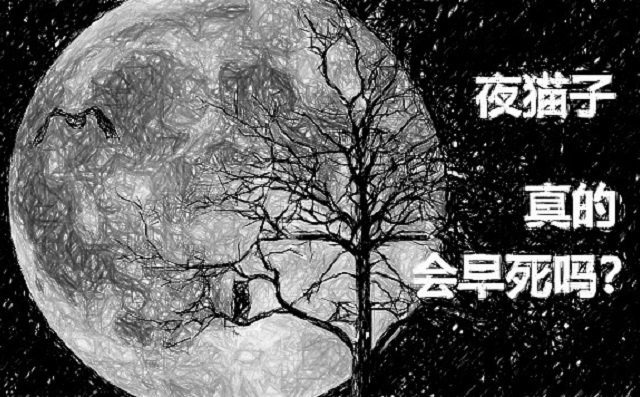
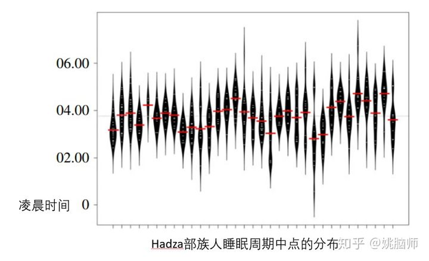
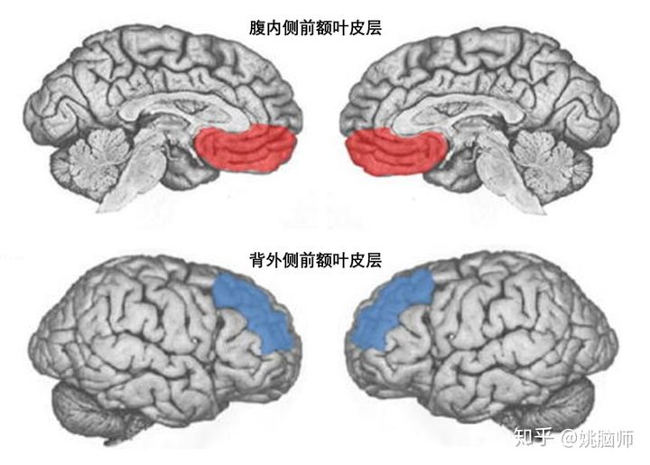
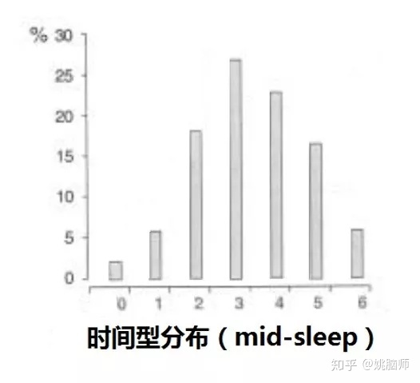
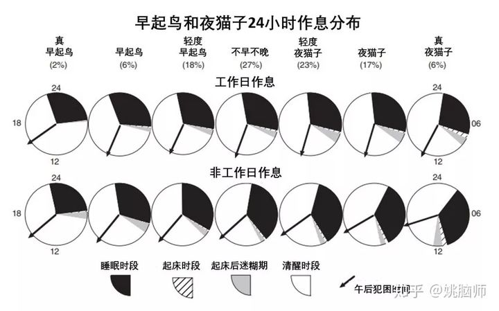

如果你是个夜猫子，那么很不幸，你可能要比早起鸟们要早死好多年！
在英国萨里大学上个月发表一项研究里，研究人员调用了英国最大的生物样本库（UK Biobank），调查了43万成人（38到73岁）在6年半的时间段内死亡的情况 [1]。
在控制了个体年龄，性别，种族，吸烟习惯，体重，睡眠长度，社会经济状况和患病状况等一系列的因素之后，科学家发现那些时间型（chronotype）偏晚的人（夜猫子）死亡的几率仍旧要比早起鸟的死亡几率高10%。
越是晚睡的人，他们患上各种慢性疾病的几率越大。和早起鸟相比，夜猫子更易患上精神疾病，糖尿病，消化道以及呼吸道的疾病，也更容易因这些疾病而死亡。
可是如果夜猫子比早起鸟要更容易死亡的话，那他们为什么在人类进化的历史长河中没有被淘汰？
1 天生夜猫不是罪
事实上，夜猫子和早起鸟都为人类的生存做出了重大贡献。
人类学家们在坦赞尼亚研究了一个野蛮部落的睡眠情况 [2]。这个部落和我们祖先一样，至今还过着狩猎采集的生活。在长达20天的研究期间，研究人员发现这个部落里每个人睡眠的规律都不一样。从日落到日出，部落里总是有一部分人在睡觉，另一部分人保持清醒（见下图）。

一个部落如果既有早起鸟又有夜猫子，它就更容易在自然选择中生存下来。因为错开的睡眠周期使部落里随时都有人保持警觉，以避免在大家都睡着的时候被猛兽一网打尽。
这样看来，睡眠偏好（或时间型）的多样性其实是祖先给我们的礼物，在很大程度上是由基因决定的。既然夜猫子和早起鸟在进化上并没有优劣之分，那为什么夜猫子要比早起鸟更容易死亡呢？
2 都是早起惹得祸
工业革命后，人类社会逐渐采用了规律的作息时间。对于公司和政府来说，作息的标准化能够提高管理的效率。朝九晚五上下班有利于衡量职员的工作表现。学生们按时上下学才能把课堂有效的组织起来。
**由于固定作息时间的出现，早起也一时成为了勤奋和成功的象征。**如果你能在大多数人睡醒之前开始新的一天，就仿佛比别人创造出了更多的时间，让自己在学习和工作上先人一步。媒体上也经常把很多人成功的秘诀归结于早起。比如大陆富豪王健林早上4点就起床健身，苹果CEO Tim Cook 凌晨3.45就起床处理邮件。

**但是无脑的早起忽略了个体间时间型的多样性。**早起对早起鸟来说是很顺其自然的事情。对夜猫子来说，早起会和他们的生物钟（晚）形成冲突，使他们长期期缺乏睡眠（chronic sleep loss）。
长期缺乏睡眠不仅和吸烟酗酒量 [3]，肥胖（obesity）[4]，内分泌和心血管损伤 [5]，抑郁症（depression）[6]等都呈正相关，还对大脑前额叶（prefrontal lobe）的功能有不良的影响 [7]。
前额叶掌管复杂的人类特有的认知能力，包含两大块区域。其中背外侧前额叶皮层（Dorsolateral prefrontal cortex）主要掌管工作记忆（working memory）和计划（planning）。腹内侧前额叶皮层（Ventromedial prefrontal cortex）则主要负责决策和社会认知。在临床上，前额叶功能的受损和注意力缺乏综合症（attention deficit disorder），精神病（schizophrenia），强迫症（obsessive-compulsive disroder），上瘾（addiction）和类自闭症的不能换位思考（deficits in theory of mind abilities）有关。

**这也就能解释为什么在学校里，缺乏睡眠的夜猫子们的学习成绩就不如早起鸟们 [8]。**从小学到高中，大部分学校都有早读的习惯。学生们可能早上7点就要到教室开始早读了。晚10点睡觉的早起鸟们已经睡饱了8个小时，而晚上2点睡觉的夜猫子们可能只睡了4个小时。缺乏睡眠使夜猫子们一整天神情恍惚，不能集中注意力。获取的知识也不能良好的记忆巩固。不仅学习成绩不如早起鸟，夜猫子们还不能良好地进行社会认知和决策，因此在社交上容易受排挤，心智不能健康的成长。
在学校里已经慢人一步，夜猫子走上工作岗位后仍旧经受着早起的煎熬。不仅工作效率不如早起鸟，职业发展不如意，还容易落下一身病，早早地离开人世。
3 我不想早死肿么办？
首先我们要意识到如果夜猫子能被 “训练” 成早起鸟，他们就不会有因早起而短命的结局。个体的时间型在很大程度上是由基因决定的，不会单纯地因为外界因素而改变。
不能改变基因的话，**我们就应该尝试改变外界因素，根据自己的时间型来安排作息时间。**学术界里广泛使用慕尼黑时间型问卷（Munich ChronoType Questionnaire, MCTQ）[9] 来判定个体的时间型。完整的问卷和计算公式可以到 http://www.thewep.org/documentations/mctq下载。 这个问卷挺复杂的，所以姚脑师这里就把关键的部分翻译出来给大家做时间型的判断。
**时间型的判断是根据你工作日睡眠的长度和非工作日（周末）睡眠的长度，来计算睡眠周期的中点（Mid-Sleep）。**需要注意的是非工作日不可以使用闹钟，测试的必须是睡到自然醒的长度。我们可以用现在的手机或是可戴式手表来检测睡眠的长度，然后求自己工作日和非工作日睡眠的平均长度。
我们来看怎么计算自己的时间型（请使用24小时格式来计算）：
睡眠长度 = 起床时间 – 入睡时间（不是上床时间） 如果你的工作日睡眠长度 ≥ 非工作日睡眠长度，时间型 = 非工作日入睡时间 + 非工作日睡眠长度/ 2; 如果你的工作日睡眠长度 < 非工作日睡眠长度，时间型 = 非工作日入睡时间 + 非工作日睡眠长度/ 2 – （非工作日的睡眠长度 – 工作日的睡眠长度）/2
我们来看个例子。假设你工作日都是00:00入睡，06:30起床，你的工作日睡眠长度就是06:30。到了周末，你01:00才睡，到第二天09:00才起床，那么你的非工作日睡眠长度就是08:00。因为你的工作日睡眠长度要短于非工作日的睡眠长度，那我们就要用第二个公式。时间型 = 01:00 + 08:00/2 – (08:00 – 06:30)/2 = 05:00 – 00:45 = 04:15。也就是说，你自然睡眠周期的中点是早上4点15分。那我们看下图的时间型分布。04:15落在从右至左的第三个柱上（4那个柱上），属于轻度夜猫型，有23%的人属于这种类型。如果没有工作日和非工作日的作息切换，你的自然睡眠周期（按8小时睡眠长度）应该是00:15 – 8:15。


我们找出了自己的时间型以后就可以根据自己的自然睡眠周期来调整作息。这对自由职业者来说还比较容易，但是对很多学生和朝九晚五的上班族来说就不现实。
这时候我们就需要全社会意识到个体的时间型差异，抛弃对早起的盲目推崇。
比如学校应当考虑把上学时间往后调，让夜猫型的孩子们获得足够的睡眠，以提高他们学习的注意力和效率。
公司企业，尤其是以脑力劳动为核心的企业，应为员工量身定做工作时间，允许他们在不同的时间点上班。这一点西方走在我们的前列。姚脑师在曼大的一个同事就是自由工作时间的受益者。她是一个非常极端的夜猫子，她每天白天睡觉，下午5点开始上班。因为她的生物钟周期晚，她在下午到晚上这一段时间时头脑才比较清醒，工作效率高。若是早上上班的话，她经常会因为缺乏睡眠而不能正常讲课或科研。试想大学如果像工厂一样每天按点打卡上班，会导致多少夜猫型学者不能有效的为社会做出贡献？
所以说，早起不一定身体好，顺其自然才睡的饱。
祝大家每天睡到自然醒～
参考文献
- Knutson, K. L., & von Schantz, M. (2018). Associations between chronotype, morbidity and mortality in the UK Biobank cohort. Chronobiology international, 1-9.
- Samson, D. R., Crittenden, A. N., Mabulla, I. A., Mabulla, A. Z., & Nunn, C. L. (2017). Chronotype variation drives night-time sentinel-like behaviour in hunter–gatherers. Proc. R. Soc. B, 284(1858), 20170967.
- Wittmann, M., Dinich, J., Merrow, M., & Roenneberg, T. (2006). Social jetlag: misalignment of biological and social time. Chronobiology international, 23(1-2), 497-509.
- Roenneberg, T., Allebrandt, K. V., Merrow, M., & Vetter, C. (2012). Social jetlag and obesity. Current Biology, 22(10), 939-943.
- Rutters, F., Lemmens, S. G., Adam, T. C., Bremmer, M. A., Elders, P. J., Nijpels, G., & Dekker, J. M. (2014). Is social jetlag associated with an adverse endocrine, behavioral, and cardiovascular risk profile?. Journal of biological rhythms, 29(5), 377-383.
- Levandovski, R., Dantas, G., Fernandes, L. C., Caumo, W., Torres, I., Roenneberg, T., … & Allebrandt, K. V. (2011). Depression scores associate with chronotype and social jetlag in a rural population. Chronobiology International, 28(9), 771-778.
- Muzur, A., Pace-Schott, E. F., & Hobson, J. A. (2002). The prefrontal cortex in sleep. Trends in cognitive sciences, 6(11), 475-481.
- Curcio, G., Ferrara, M., & De Gennaro, L. (2006). Sleep loss, learning capacity and academic performance. Sleep medicine reviews, 10(5), 323-337.
- Roenneberg, T., Wirz-Justice, A., & Merrow, M. (2003). Life between clocks: daily temporal patterns of human chronotypes. Journal of biological rhythms, 18(1), 80-90.